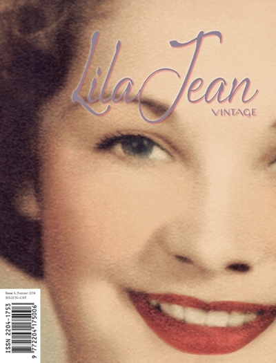
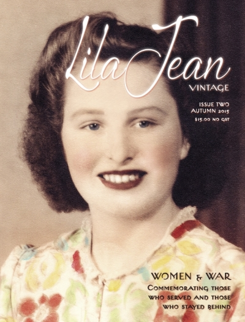

Help us create our fourth issue!

Issue One | Summer 2014
Ever wondered what it was like to shop at Mark Foy's in Sydney or Georges in Melbourne? We look at the history of some of Australia's most iconic department stores and how the world of retail has changed. We also look at the evolution of swimwear, the 2014 Fifties Fair and some readers ask Santa for what they really want this Christmas. We talk to Sydney vintage blogger Annora Thoeng about her blog Nora Finds, Lil Tulloch about the Newtown vintage store Reclaim and Tony Vacher from Sterling Hairdressers shows us how to achieve the perfect 1950s short, back and sides.

Issue Two | Autumn 2015
In our limited edition commemorative Women & War issue we present an exclusive interview with Evelyn Hill, one of the few remaining war brides of WWII, we look at life at a munitions factory during WWII through the diary entries of Bessie May Hayward, as well as second hand stories passed down through photographs and objects. Taking a step back to the 1940s we look at the fashion and hairstyles that made this period so iconic. We look into the history and significance of the ANZAC War Memorial in Sydney's Hyde Park and the Shrine of Remembrance in Melbourne as well as the important role women played during WWI.